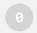
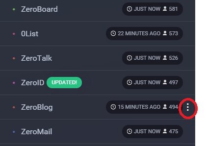
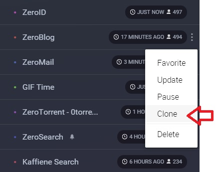
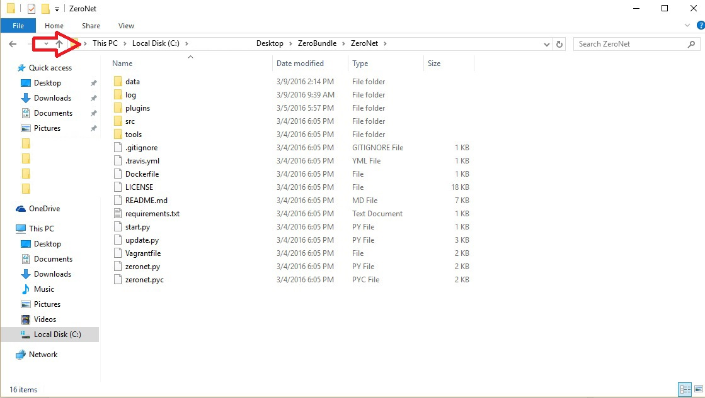
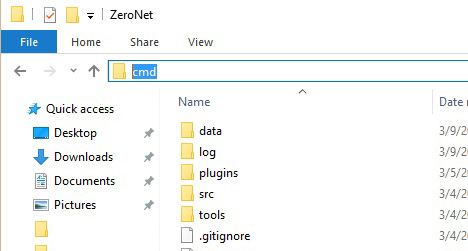
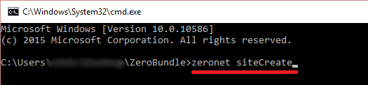
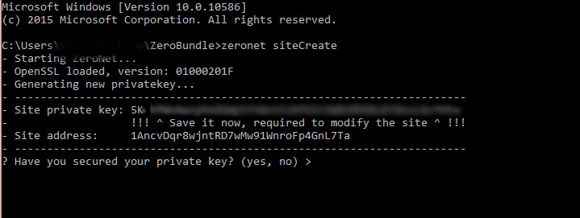

Existem duas maneiras maneiras principais para criar um site na ZeroNet.
A primeira é a mais fácil forma de criar um site na ZeroNet é através da função clone, permite você criar um site em 15 segundos, como a grande maioria dos sites na ZeroNet são Open Source o ONE_TRUE_DEVELOPER @nofish(criador da ZeroNet) criou uma maneira para qualquer pessoa fazer um "clone" de um site na ZeroNet.(Como você pode fazer isso a baixo)
A segunda tambem é facil porém mais "tradicional" onde você só recebe um endereço na ZeroNet e uma pasta para você colocar o seu site ou seja seus arquivos arquivos html,css,json....(Como você pode fazer isso a baixo)
Primeiro passo - Vá para a pagina inicial da ZeroNet atravéz desse link ou clik no botão 0 no canto superior direito de sua tela
botão como esse: 
Segundo passo - Na parte esquerda de sua tela deve existir todos os sites que você esta servindo na ZeroNet, dentre esses sites exitem alguns que possue uma função para clona-los facilmente incluido Zero Talk,0list e Zero Blog(Sim você pode criar um blog em 15 segundos). Para clonar o site você só precisa clicar nos 3 pontos que aparence do lado do nome do site em depois clikar em "clone"
assim:


Pronto!! Não serio é só isso!!
Esse tutorial é para pessoas que usam Windows
Primeiro passo - Vá na pasta onde você instalou a ZeroNet provavelmente chama ZeroBundle;
Segundo passo - Abra o cmd nessa pasta. Isso pode ser feito de diversas maneiras. porem a maneira mais fácil na minha opinião é digitar "cmd" na parte que você ve o caminho da pasta a "file directory" e aperte enter
Assim:


Terceiro passo - agora com o cmd aberto você vai escrever o comando: "zeronet siteCreate"(tem que ser igual até as letras maiusculas e minuscula) depois aperte enter

Agora deveria aparecer isso:

[!!!IMPORTANTE]Quarto passo: salve o que esta escrito na frente do "Site private key:" em um local seguro pois essa é a sua chave para fazer alterações a seu site NUNCA foreneça essa chave a ninguem pois essa pessoa podera modificar o seu site, também salve o que esta escrito na frente do "Site Address:" pois é o o endereço do seu site
Quinto passo - Escreva "yes" depois de ter feito o quarto passo.
Pronto site criado!!! Agora para as outras pessoas ver seu site é só "http://127.0.0.1:43110/{endereço do seu site que você salvou no passo 4}" no caso desse exemplo é http://127.0.0.1:43110/1AncvDqr8wjntRD7wMw91WnroFp4GnL7Ta
Agora que você criou o site certamente vai querer modificar elepara fazer isso é simples:
Primeiro passo - vá a pasta do site "ZeroNet/data/{endereço do seu site que você salvou no passo 4}" aqui que você irar criar os arquivos e modificar os arquivos html,css,SQL....
Segundo passo - Para você Publicar uma modificação e transmitila para os peers va para o seu site na ZeroNet http://127.0.0.1:43110/{endereço do seu site que você salvou no passo 4}
Terceiro passo - clik e arraste para a esquerda o botão 0 no canto superior direito de sua tela
botão como esse:
Quarto passo - No final dessa aba que abril deve ter dois botões um "sign" o outro "publish" click no "sing" primeiro ai ele vai pedir para você digitar o sua "Site private key" que você salvou em um local seguro no passo 4 da criação do site.
Quinto passo - Depois disso é so apertar publish.